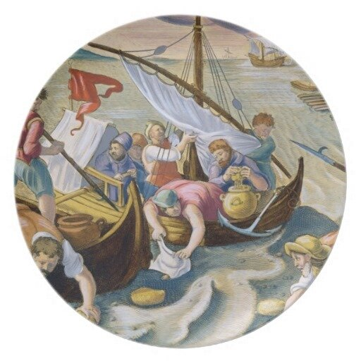

Ад ли, адская ли сила
Под клокочущим котлом
Огнь геенский разложила ―
И пучину взворотила
И поставила вверх дном?
Ф. Тютчев.

Использование губок для сбора нефти с морской поверхности. Раскрашенная гравюра Jan Collaert (1566-1628) , частная коллекция.
Когда сарацины собираются на морскую войну, они сооружают печь как раз на носу своего корабля, ставят на нее медный сосуд, заполненный этими веществами, разведя огонь под ним. И один из них, изготовив бронзовую трубу, подобную той которую в народе называют squitiatoria [шприц, распылитель] и с которой играют дети, они распыляют [вещество] на врагов.
А когда викинги встретили сильное сопротивление, то принялись они [пираты] раздувать кузнечными мехами ту печь, в которой был огонь, и от этого возник сильный грохот. Там находилась медная труба, и из нее полетел большой огонь на один корабль, и он в считанные минуты сгорел дотла.
CVIII. В [сирийской провинции] Коммагене, в городе Самосате, есть пруд, извергающий воспламеняемую тину, так называемую «мальту». Попадая на что-нибудь если человек до нее дотронется твердое, она прилипает, а и [загоревшись, попробует] убежать, она преследует его. С ее помощью защищали свои стены [жители одного из городов,] который осаждал Лукулл: воины горели вместе со своим оружием. Вода только сильнее разжигает это пламя. Показано на опытах, что погасить его можно только землей.
CIX. Сходна [с этим веществом] и природа нефти. Так называют вытекающую из земли около Вавилона и в парфянской области Астакене жидкость наподобие минеральных смол. С ней весьма сроден огонь, который прыжком устремляется к ней сразу, как только она окажется досягаемой. С ее помощью, как рассказывают, Медея сожгла свою соперницу: как только та приблизилась к жертвеннику, чтобы совершить жертвоприношение, ее венок был охвачен огнем.
Плиний Старший Естественная история, кн. II.
Казалось, что город вот-вот будет взят. Но персы придумали следующее. Деревянную башню, которая давно у них была сделана, они оставили над стенами и наполнили ее самыми воинственными из своих воинов, одев их в панцири и покрыв голову и остальное тело кожаным оружием с набитыми железными гвоздями. Наполнив сосуды серой, асфальтом и другим снадобьем, которое мидяне называют «навфа»-нефть, а эллины-«маслом Медеи», поджегши их, они стали бросать на эти машины с таранами. Они чуть было все не сгорели. Но те, которые, как я сказал, стояли рядом с этими машинами, своими шестами (о них я только что упоминал), непрерывно подхватывая сосуды, бросаемые со всех сторон, и очищая от них крышу машин,.тотчас же сбрасывали их на землю. Они начинали уже думать, что не смогут долго выдержать такую работу, так как огонь, чего только ни касался, тотчас же все сжигал, если его немедленно не сбрасывали.
Прокопий Кесарийский. Война с готами-Книга IV гл. 11
15. В Вавилонии в большом количестве находят асфальт. Об асфальте Эратосфен сообщает следующее: жидкий асфальт, называемый нефтью, встречается в Сусиде, а сухой, способный затвердевать — в Вавилонии. Источник сухого асфальта находится поблизости от Евфрата. При разливе этой реки во время таяния снегов источник асфальта также наполняется и изливается в реку. Здесь образуются большие асфальтовые глыбы, пригодные для постройки домов, сооружаемых из обожженного кирпича. По словам других, в Вавилонии есть и жидкий асфальт. О сухом асфальте было уже сказано, что он полезен преимущественно при постройке домов, но говорят, что плетенные из камыша лодки и обмазанные асфальтом становятся водонепроницаемыми. Жидкий асфальт, называемый нефтью, отличается странными природными свойствами: если нефть поднести близко к огню, то она загорается, а если придвинуть к огню намазанный нефтью предмет, то последний воспламеняется. Потушить водой горящую нефть нельзя (так как она начинает гореть еще сильнее), разве только очень большим количеством воды, но ее можно потушить, заглушив глиной, уксусом, квасцами и птичьим клеем. Как говорят, Александр ради опыта велел облить раба нефтью в бане, а потом поднести светильник с огнем. Тотчас пламя охватило раба, и он чуть не погиб, если бы стоящие вокруг люди, вылив на него громадное количество воды, не справились с огнем и не спасли его. По сообщению Посидония, в Вавилонии есть нефтяные источники — белой и черной нефти. Некоторые из этих источников, я имею в виду источники белой нефти, содержат жидкую серу (эти-то источники притягивают с. 690 пламя), тогда как источники черной нефти содержат жидкий асфальт, который жгут в светильниках вместо масла.
Страбон, География, Кн. XVI, 15. ( перевод Г. А. Стратановского)